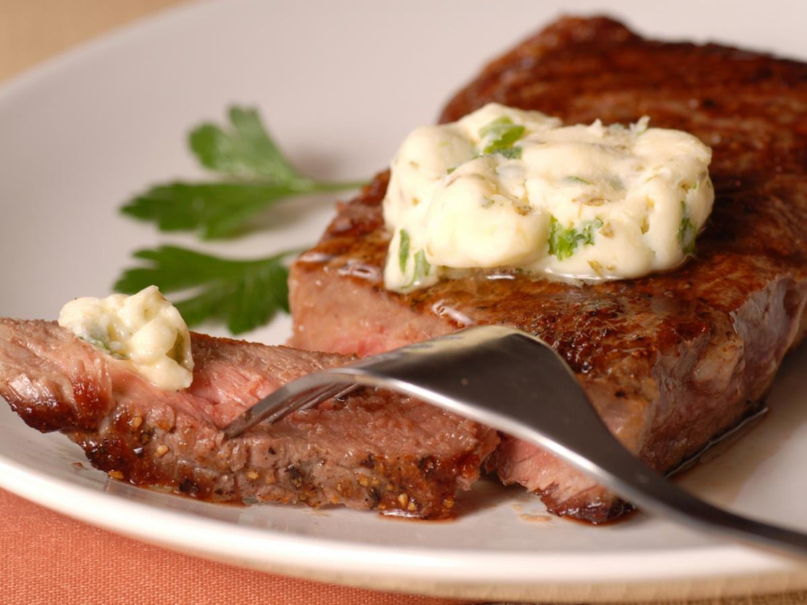

Sirloin Steak with Garlic Butter Recipe

Description
Delicious Sirloin Steak with galic butter sauce. Shoot for medium rare on the steak.
Ingredients
- 1/2 cup of butter
- 4 cloves of garlic, minced
- 2 teaspoons garlic powder
- 4 pounds beef top sirloin steaks
- salt and pepper to taste
Directions
- Preheat grill on high heat and lightly oil grate.
- Melt butter in saucepan over medium-low heat. Stir in minced garlic and garlic powder. Set aside.
- Season both sides of steak with salt and pepper.
- Place steaks on grill and cook 4 minutes per side or until medium-rare.
- Transfer steaks to warmed plates; brush liberally with garlic butter and allow to rest for 5 to 7 minutes.
- Enjoy!